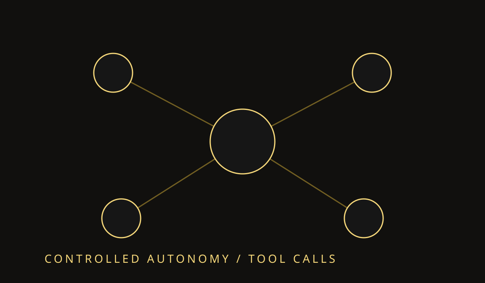

From Automation to Agentic Workflows
Not every automation needs an agent. Deterministic work should remain deterministic. Agentic workflows earn their complexity when the system must choose tools, recover from uncertainty, or adapt its plan to the user's goal.
Use agents where choices matter
A useful boundary is the decision point. If the next action depends on context that cannot be represented cleanly as a fixed branch, an agent can make that choice explicit.
Keep the system observable
Log tool calls, state transitions, and failed attempts. A workflow that cannot explain its decisions is difficult to debug and difficult to trust.
Design for graceful stops
A good agent knows when to ask a question, return partial progress, or stop. Reliability comes from controlled autonomy, not from making every step autonomous.